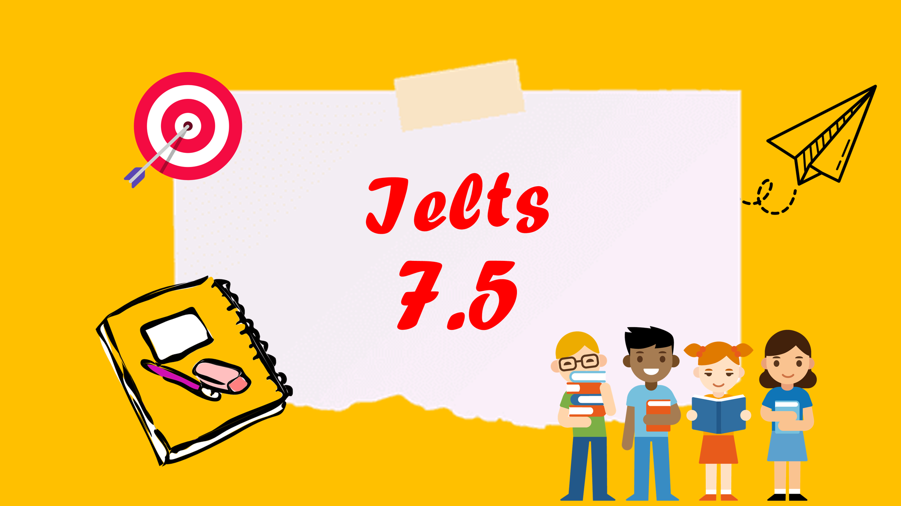
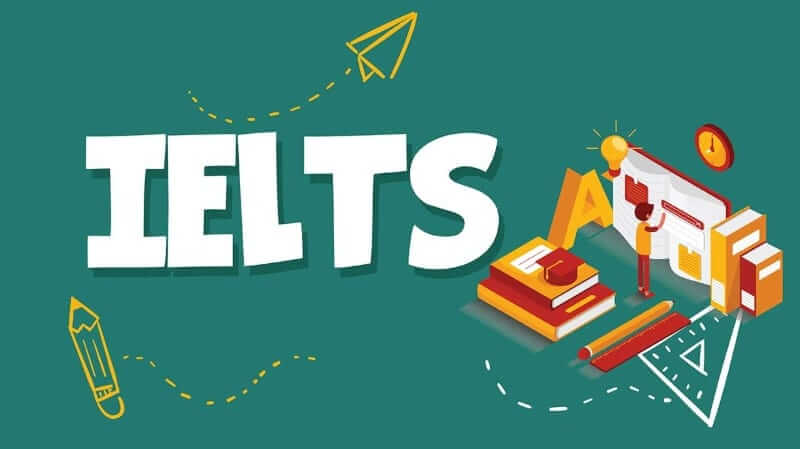
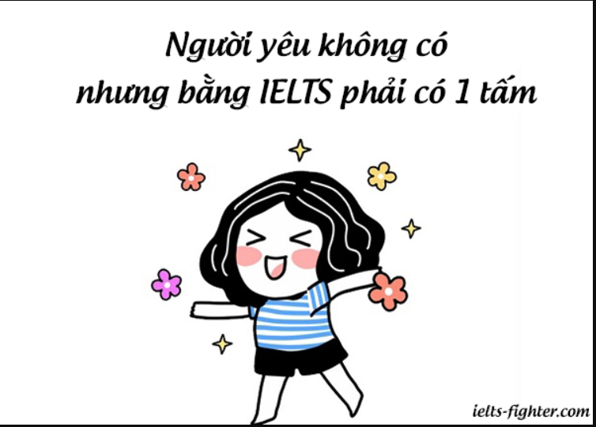

Con trai tôi, trượt đại học, 18 tuổi cái tuổi vẫn còn chưa
đủ nhận thức, vẫn rất còn non nớt và chưa ý thức được tương
lai, định hướng và mục đích sống như thế nào thì phải tạm
dừng trước ngưỡng cửa đại học. Vậy 1 năm tới, con sẽ như thế
nào khi các bạn của con đều đã trở thành Sinh viên, liệu con
có đủ kiên trì để ôn thêm một năm nữa hay lại nản lòng, tự
ti khi mang tiếng trượt đại học.... Thực tâm là người mẹ,
tôi có buồn, nhưng tôi đã hứa dù thế nào cũng phải đồng hành
cùng con, đối mặt với hoàn cảnh, vấn đề mà con gặp phải...
thế nhưng để động viên con không phải dễ, không phải câu
chuyện ngày một ngày hai khi trước mắt còn là 1 chặng đường
không hề bằng phẳng...

SỰ ÂN HẬN CỦA TÔI – NGƯỜI MẸ...
Khi con bắt đầu bước vào cấp 3, tôi đã định hướng cho con
luyện Ielts vì đến hiện giờ, tiếng Anh đã phổ cập và bắt
buộc các con phải trang bị, thành thạo tiếng Anh khi bắt đầu
đi làm, có tiếng Anh con mới tự tin, mới có nhiều cơ hội
nhận được công việc tốt... và tôi bắt đầu tìm kiếm lớp...
sau một hồi tìm hiểu tôi chọn 1 trung tâm khá có tiếng vì
thấy quảng cáo rầm rộ, rất nhiều người biết đến, đã vậy lại
học gần nhà, đôi đường đều thuận tiện. Ghi danh cho con,
đóng tiền kha khá để vào lớp Pre-Ielts sau bài test
(Pre-Ielts là bước tiền đề để cung cấp những kiến thức IELTS
cơ bản cho các bạn chưa từng ôn thi IELTS hay trình độ tiếng
Anh chưa được tốt). Trước khi vào học, tôi có đọc rõ quy
định là nếu con không làm đủ bài sẽ thông báo về ngay cho
gia đình để phối hợp đôn đốc, nhắc nhở...thế nên tôi rất yên
tâm và để con tự giác học vì nếu có vấn đề gì thì trung tâm
sẽ thông báo cho tôi. Con đi học về và bảo lớp đông như
giảng đường đại học mẹ ạ, tôi có phần hơi e ngại nhưng vốn
dĩ trung tâm rất có tiếng nên tôi lại tự nhủ là trung tâm có
phương pháp dạy để các con tiếp thu tốt, và cứ thế tôi để
con học, con tôi được cái bố mẹ bảo học gì thì cứ đi thôi và
ít khi kêu ca này nọ nên tôi cũng dần dần không để ý nhiều.
Thế rồi lần lượt, tôi đóng tiền khóa 2 Pre-Ielts rồi khóa 1,
khóa 2 Ielts với con số lên đến vài chục triệu đồng, không
phải nhỏ đối với người làm công ăn lương như tôi, nhưng thôi
thì cố gắng vì giấc mơ cầm trong tay chứng chỉ 7.0 của
con... Đến một ngày gần hết khóa học thứ 2 thì trung tâm có
báo con thiếu bài, mở chi tiết ra xem thì trời ơi, con tôi
thiếu gần 20 bài... vậy lúc con tôi thiếu 1, 2 bài sao không
thấy thông báo??? Rồi đốc thúc con hoàn thành bài để nộp
theo yêu cầu thì đến kỳ thi kết thúc hai khóa học, với hai
khóa học này, theo như lộ trình của trung tâm thì các con có
thể dự thi kỳ thi Ielts lấy điểm 6.5 hoặc 7.0. Ở trung tâm
thông báo thi cuối kỳ 2 buổi, một buổi 3 kỹ năng (nghe, đọc,
viết) và một buổi nói; con tôi thi xong nghe, đọc, viết thì
sau cứ chần chừ không chịu đăng ký thi nói, cũng chẳng thấy
trung tâm nhắc nhở... cũng không thấy có điểm của các kỹ
năng con đã thi. Thế là học xong, thi xong, kết thúc khóa
học và tôi nghĩ con tôi sẵn sàng đi thi Ielts. Tôi đăng ký
thi cho con và đến ngày đưa đón con, hồi hộp đợi kết quả...
Sau gần 2 tuần 5.5 là điểm số tôi nhận được, hoang mang và
thất vọng vô cùng, không tin nổi vào kết quả nhận được; sẵn
sàng đi thi để lấy ít nhất 6.5 mà điểm mang về 5.5 chỉ trên
trình độ tối thiểu 5.0. Lúc nhận điểm thi, con lấy hết can
đảm và bảo: Thực ra đi thi con không tự tin, con không biết
gì mấy mẹ ạ...

Vậy là, mục tiêu hết lớp 11 đạt Ielts 7.0 để dành thời gian
ôn luyện Toán, Văn đã tan tành kế hoạch, để nâng 1 band thì
lộ trình 1 năm nữa thì cũng là kỳ thi Quốc Gia của con, vậy
là con phải nỗ lực ôn cả Toán, Văn và Ielts trong năm lớp
12. Nhìn xung quanh, bạn bè đồng trang lứa với con đã lấy
chứng chỉ 7.0, thậm chí 8.0 và giờ ung dung tạm gác môn
Tiếng Anh sang một bên để tập trung vào các môn còn lại cho
kỳ thi Quốc Gia. Tôi lúc này mới thấy ân hận, tại sao, tại
sao, tôi không nghiêm túc tìm hiểu kỹ lớp học cho con, không
sâu sát con để suốt 2 năm ròng con không tiến bộ mấy. Tôi
ước gì thời gian quay trở lại, nhưng đó chỉ là ước mơ, giờ
là phải đối diện với vấn đề và tìm giải pháp. Tôi và con
ngồi trao đổi nghiêm túc và sau khi tìm hiểu thêm một số phụ
huynh có con đạt điểm tốt thì ngoài việc chọn lớp thì việc
con tự giác học là cực cực kỳ cần thiết. Chốt lại, tôi chọn
một trung tâm mới cho con với một lớp học chỉ có 4, 5 bạn và
tôi đăng ký cho con một chương trình học online để con tự
luyện thêm. Sau một thời gian, con đã rèn được việc tự học,
tiến bộ dần nên con ngày một hứng thú hơn, con thích lớp,
thích cô và rất thích chương trình học online vì khá hiệu
quả và khơi dậy sự đam mê và tự giác trong con....
VỠ ÒA HẠNH PHÚC...
6 tháng sau, đúng trước kỳ thi Quốc Gia 1 tháng, con thi lại
Ielts với sự tự tin rõ rệt so với lần thi đầu, và kết quả
7.0, bằng tất cả nỗ lực từ việc chọn lớp, chọn khóa học, đôn
đốc và nhất là việc ý thức tự học, con đã nâng 1.5 điểm một
cách xuất sắc, tôi đã run lên khi đọc kết quả và tiếp theo
vỡ òa niềm vui, niềm hạnh phúc cùng con.
Với 7.0 Ielts con dễ dàng nộp hồ sơ xét tuyển sớm đại học
cùng với điểm tổng kết của lớp 12 hoặc cả 3 năm cấp 3 (tùy
yêu cầu của từng trường Đại học). Hoặc có thể chọn phương
thức dùng Ielts quy đổi hệ số kết hợp điểm thi hai môn Toán
& Văn (theo khối con lựa chọn) thì con chỉ cần đạt điểm 2
môn Toán và Văn khoảng 15 điểm là đàng hoàng trúng tuyển. Và
cuối cùng con đỗ 3 trường đại học: Kinh tế quốc dân, Thương
mại và Học viện ngân hàng với đóng góp phần lớn do điểm 7.0
Ielts; phải nói là kỳ tích. Ngoài ra với điểm 7.0 con đủ
điều kiện học tại một số khoa liên kết quốc tế một cách dễ
dàng.

Nếu không có điểm Ielts 7.0 trước kỳ thi đại học để chọn
phương pháp xét tuyển sớm, con tôi chính thức trượt tất cả
các trường mà con yêu thích và sẽ phải đối diện với hiện
thực phũ phàng TRƯỢT ĐẠI HỌC như giả thiết đã đề cập ở trên
với những cú sốc tâm lý không thể lường trước. Điểm 7.0
Ielts thật sự là đi ĐIỀU KỲ DIỆU đối với con,
Thế nên, ngay từ bây giờ, với kinh nghiệm mẹ con tôi đã trải
qua cùng những cảm xúc lo âu, hồi hộp, thất vọng và ân
hận... tôi thực sự mong muốn các bậc phụ huynh và các con
hãy nghiêm túc học Tiếng Anh và luyện Ielts, có Ielts con
tôi tự tin hơn rất nhiều và đã đàng hoàng bước vào cánh cổng
trường đại học mơ ước. Tuy nhiên, việc chọn được lớp cho con
là một phần, nhưng với chi phí khoảng 70 triệu để luyện thi
của con tôi thì hẳn không phải gia đình nào cũng đủ điều
kiện vì bản thân tôi cũng phải cố gắng rất nhiều để có thể
cho con theo học. Vậy nên, thay vì chặn lại ước mơ của con,
bố mẹ hãy động viên con hiểu tầm quan trọng của việc học
Tiếng Anh, của việc luyện thi Ielts, không gì là không thể,
chỉ cần chúng ta nỗ lực tìm kiếm giải pháp. Và việc lựa chọn
khóa học online, khóa học đã giúp con tôi tự giác và nâng
cao tinh thần tự học lên rất nhiều... ĐÓ LÀ GIẢI PHÁP CHO
CON BẠN...
Sở hữu khóa học ngay để tiếp sức cho ước mơ của con chỉ với
500.000 VNĐ